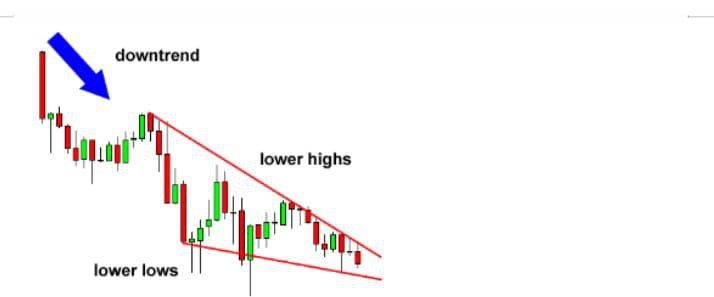
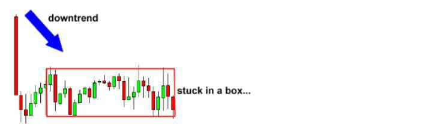
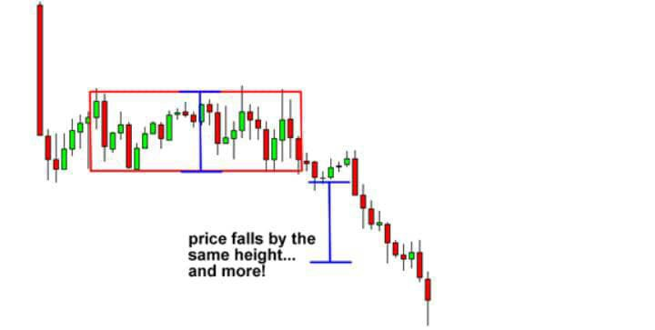

CHART PATTERNS
What are Chart Patterns
Think of chart patterns as a land mine
detector because, once you finish this
lesson, you will be able to spot
explosions" on the charts before they
even happen, potentially making you a lot
of money in the process.
Chart patterns are very useful tools in Technical Analysis,
In this lesson, we will teach you basic chart
patterns and formations.
When correctly identified, it usually leads to an
explosive breakout, so watch out!
Remember, our goal is to spot big movements before they happen so that we can ride them out and rake in the cash.
Here's the list of chart patterns that we're going to cover
1 .Double Top and Double Bottom
2. Head and Shoulders/Inverse Head and Shoulders
3. Rising and Falling Wedges
4. Bullish and Bearish Rectangles
5. Bearish and Bullish Pennants
6. Triangles (Symmetrical, Ascending, and
Descending)
1. DOUBLE TOP AND BOTTOM
Let's learn how to identify these chart patterns and trade them.
Double Top
A double top is a reversal pattern that is
formed after there is an extended move up of the market.
The "tops" are peaks which are formed
when the price hits a certain level that
cant be broken.
After hitting this level, the price will
bounce off it slightly, but then return back
to test the level again.
If the price bounces off of that level again,
then you have a DOUBLE Top
In the chart above, you can see that the Two peaks or "Tops" after a strong Upward Move
Looking at the chart you can see that the price
breaks the neckline and makes a nice move down.
Remember that double tops are a trend reversal
formation so you'll want to look for these after there
is a strong uptrend.
You Will also notice that the drop is approximately the
same height as the double top formation.
Keep that in mind because that'll be useful in setting
profit targets.
Double Bottom
The double bottom is also a trend reversal formation, but this time we are looking to
go long instead of short.
These formations occur after extended downtrends when two valleys or
"bottoms" have been formed.
You can see from the chart above that after the previous downtrend, the price formed two valleys because it wasn't able to go below a certain level. Notice how the second bottom wasn't able to significantly break the first bottom.

The price broke the neckline and made a nice move up.
See how the price jumped by almost the same height as that of the double bottom formation?
Remember, just like double tops, double bottoms are also trend reversal formations.
You'll want to look for these after a strong downtrend.
This is a sign that the selling pressure is about finished, and that a reversal is about to Occur.
2. THE HEAD AND SHOULDER PATTERN
How to Trade the Head and shoulders Pattern
The head and shoulders chart pattern is a
reversal pattern and most often seen in
uptrends.
Not only is head and shoulders known for
trend reversals, but it's also known for
dandruff reversals as well.
In this lesson, we'll stick to talking about
trend reversals and leave the topic of
dandruff for another time.
Head and Shoulders
A head and shoulders pattern is also a
trend reversal formation.
It is formed by a peak (shoulder),
followed by a higher peak (head), and
then another lower peak (shoulder).
A "neckline" is drawn by connecting the
lowest points of the two troughs.
The slope of this line can either be up or
down. Typically, when the slope is down,
it produces a more reliable signal.
In this example, we can easily see the
head and shoulders pattern.
The head is the second peak and is the highest point in the pattern. The two shoulders also form peaks but do not exceed the height of the head.
With this formation, we put an entry order below the neckline.
We can also calculate a target by
measuring the high point of the head to the neckline.
This distance is approximately how far the price will move after it breaks the neckline.
You can see that once the price goes below the neckline it makes a move that is at least the size of the distance between the head and the neckline.
We know you're thinking to yourself, "the price kept moving even after it reached the target."
And our response is, "DONT BE GREEDY!"
INVERSE HEAD AND SHOULDER PATTERN
The name speaks for itself. It is basically a
head and shoulders formation, except
this time it's upside down.
A valley is formed (shoulder), followed by
an even lower valley (head), and then
another higher valley (shoulder). These
formations occur after extended downward movements.
You can see that the price moved up nicely after it broke the neckline. If your target is hit, then be happy with your profits. However, there are trade management techniques where you can lock in some of your profits and still keep your trade open in case the price continues to move your way. You will learn about those later on in the Course.
3. WEDGE CHART PATTERNS
Wedges signal a pause in the current trend. When you encounter this formation, it signals that forex traders are still deciding where to take the pair next. Wedges could serve as either continuation or reversal patterns.
We have1. Rising Wedge
2. Falling Wedge
Rising Wedge
A rising wedge is formed when price
consolidates between upward sloping
support and resistance lines.
Here, the slope of the support line is
steeper than that of the resistance.
This indicates that higher lows are being
formed faster than higher highs. This
leads to a wedge-like formation, which is
exactly where the chart pattern gets its
name from!
With prices consolidating, we know that a
big splash is coming, so we can expect a
breakout to either the top or bottom.
If the rising wedge forms after an uptrend,
it's usually a bearish reversal pattern.
On the other hand, if it forms during a
downtrend, it could signal a continuation
of the down move.
Either way, the important thing is that
when you spot this forex trading chart
pattern, you're ready with your entry
orders!
In this first example above, a rising wedge formed at the end of an uptrend. Notice how price action is forming new highs, but at a much slower pace than when price makes higher lows.
See how price broke down to the downside? That means there are more forex traders desperate to be short than be long! They pushed the price down to break the trend line, indicating that a downtrend may be in the cards. Just like in the other forex trading chart patterns we discussed earlier, the price movement after the breakout is approximately the same magnitude as the height of the formation.
Now let's take a look at another example of a rising wedge formation. Only that this time it acts as a bearish continuation signal.
As you can see above, the price came from a downtrend before consolidating and sketching higher highs and even higher lows
In this case the price broke to the down side and the downtrend continued. That's why it's called a continuation signal
We Just Talked about the rising wedge .. we also have the Falling wedge
Falling Wedge
Just like the rising wedge, the falling wedge can either be a reversal or Continuation signal. As a reversal signal, it is formed at a bottom of a downtrend, indicating that an uptrend would come next. As a continuation signal, it is formed during an uptrend, implying that the upward price action would resume. Unlike the rising wedge, the falling wedge is a bullish chart pattern.
In this example the falling wedge serves as a reversal signal. After a downtrend the price made lower Highs and lower lows
Notice how the falling trend line connecting the highs is steeper than the trend line connecting the low
Upon breaking above the top of the Wedge, the pair made a nice move Upwards that's approximately equal to the height of the formation. In this case, the price really went a few more pips Beyond that target!
Now Let's take a look at an example where the falling wedge serves as a continuation signal. Like we mentioned earlier, when the falling wedge forms during an uptrend, it usually signals that the trend will resume later on.
In this case, the price consolidated for a bit after a strong rally. This could mean that buyers simply paused to catch their breath and probably recruited more people to join the bull camp. Hmm, it looks like the pair is revving up for a strong move. Which way would it go?
See how the price broke to the top side and went on to climb higher?
If we placed an entry order above that falling trend line connecting the pairs highs, we would've been able to jump in on the strong uptrend and caught some pips!
A good upside target would be the height of the wedge formation.
If you want to go for more pips, you can lock in some profits at the target by closing down a portion of your position, then letting the rest of your position ride.
4. RECTANGLE CHART
A rectangle is a chart pattern formed when price is bounded by parallel support and resistance levels.
A rectangle exhibits a period of consolidation or indecision between buyers and sellers as they take turns throwing punches but neither has taken Over.
The price will "test" the support and resistance levels several times before eventually breaking out.
From there, the price could trend in the direction of the breakout,
whether it is to the upside or downside.
In the example above, we can clearly see that the pair was bounded by two key price levels which are parallel to one another. We just have to wait until one of these levels breaks and go along for the ride! Remember, when you spot a rectangle: THINK OUTSIDE THE BOX!

A Bearish Rectangle
A bearish rectangle is formed when the price consolidates for a while during a downtrend. This happens because sellers probably need to pause and catch their breath before taking the pair any lower.

In this example, price broke the bottom of the rectangle chart pattern and continued to shoot down. If we had a short order just below the support level, we would have made a nice profit on this trade. price falls by the same height... and more Here's a tip: Once the pair falls below the support, it tends to make a move that is about the size of the rectangle pattern. In the example above, the pair moved beyond the target so there would have been a chance to catch more pips!
Bullish Rectangle

Can you guess where the price is headed next ?
If you answered up, then you're right! Check out that nice upside breakout right there! Price pops up by the same height.. and so much more! Notice how the price moved all the way up after breaking above the top of the rectangle pattern. If we had a long order on top of the resistance level, we would've caught some pips on the trade! Just like in the bearish rectangle pattern example, once the pair breaks, it will usually make a move that's AT LEAST the size of its previous range.
5. Bearish and Bullish Pennants
How to Trade Bearish and Bullish Pennants Similar to rectangles, pennants are continuation chart patterns formed after strong moves. After a big upward or downward move, buyers or sellers usually pause to catch their breath before taking the pair further in the same direction. Because of this, the price usually consolidates and forms a tiny symmetrical triangle, which is called a pennant.
While the price is still consolidating, more buyers or sellers usually decide to jump in on the strong move, forcing the price to burst out of the pennant formation.
Bearish Pennats
A bearish pennant is formed during a steep, almost vertical, downtrend. After that sharp drop in price, some sellers close their positions while other sellers decide to join the trend, making the price consolidate for a bit.
As soon as enough sellers jump in, the price breaks below the bottom of the pennant and continues to move down. As you can see, the drop resumed after the price made a breakout to the bottom. To trade this chart pattern, we'd put a short order at the bottom of the pennant with a stop loss above the pennant. That way, we'd be out of the trade right away in case the breakdown was a fake out. Unlike the other chart patterns wherein the size of the next move is approximately the height of the formation, pennants signal much stronger moves. Usually, the height of the earlier move (also known as the mast) is used to estimate the size of the breakout move.
Bullish Pennant
Bullish pennants, just like its name suggests, signals that bulls are about to go a-chargin' again. This means that the sharp climb in price would resume after that brief period of consolidation, when bulls gather enough energy to take the price higher again.
And Just like we predicted, the price made another strong move upwards after the breakout. To play this, we'd place our long order above the pennant and our stop below the bottom of the pennant to avoid fakeouts. Like we discussed earlier, the size of the breakout move is around the height of the mast (or the size of the earlier move). You see, pennants may be small in size but they could signal huge price moves so don't underestimate 'em!
6. Triangles
There are three types of triangle chart pattern
- Symmetrical
- Descending and
- Ascending Triangle patterns
Symmetrical Triangle Pattern
Symmetrical Triangle A symmetrical triangle is a chart formation where the slope of the price's highs and the slope of the price's lows converge together to a point where it looks like a triangle. What's happening during this formation is that the market is making lower highs and higher lows. This means that neither the buyers nor the sellers are pushing the price far enough to make a clear trend. If this were a battle between the buyers and sellers, then this would be a draw. This is also a type of consolidation. What's happening during this formation is that the market is making lower highs and higher lows. This means that neither the buyers nor the sellers are pushing the price far enough to make a clear trend. If this were a battle between the buyers and sellers, then this would be a draw.

In the chart above, we can see that neither the buyers nor the sellers could push the price in their direction. When this happens we get lower highs and higher lows. As these two slopes get closer to each other, it means that a breakout is getting near. We don't know what direction the breakout will be, but we do know that the market will most likely break out Eventually, one side of the market will give in. So how can we take advantage of this? Simple. We can place entry orders above the slope of the lower highs and below the slope of the higher lows. Since we already know that the price is going to break out we can just hitch a ride in whatever direction the market moves.

In this example above, if we placed an entry order above the slope of the lower highs, we would've been taken along for a nice ride up
Ascending Triangle
This type of triangle chart pattern occurs when there is a resistance level and slope of a higher low What happens during this time is that there is a certain level that the buyers cannot seem to exceed. However, they are gradually starting to push price up as evident by the higher lows

In the chart above, you can see that the buyers are starting to gain strength because they are making higher lows. They keep putting pressure on that resistance level and as a result, a breakout is bound to happen. Now the question is, "Which direction will it go? Will the buyers be able to break that level or will the resistance be too strong?" Many charting books will tell you that in most cases, the buyers will win this battle and the price will break out past the resistance. However, it has been our experience that this is not aiways the case. Sometimes the resistance level is too strong, and there is simply not enough buying power to push it through. Most of the time, the price will, in fact, go up. The point we are trying to make is that you should not be obsessed with which direction the price goes, but you should be ready for movement in EITHER direction. In this case, we would set an entry order above the resistance line and below the slope of the higher lows.

In this scenario, the buyers lost the battle and the price proceeded to dive! You can see that the drop was approximately the same distance as the height of the triangle formation. If we set our short order below the bottom of the triangle, we could've caught some Pips off that dive.
Descending Triangle
As you probably guessed, descending triangles are the exact opposite of ascending triangles (we knew you were smart!). In descending triangle chart patterns, there is a string of lower highs which forms the upper line. The lower line is a Support level in which the price cannot seem to break.

In the chart above, you can see that the price is gradually making lower highs which tell us that the sellers are starting to gain some ground against the buyers. Now most of the time, and we do say MOST, the price will eventually break the support line and continue to fall. However, in some cases, the support line will be too strong, and the price will bounce off of it and make a strong move up. The good news is that we don't care where the price goes. we just know that it's about to go somewhere. In this case, we would place entry orders above the upper line (the lower highs)and below the support line.

In this case, the price ended up breaking above the top of the triangle pattern. After the upside breakout, it proceeded to surge higher, by around the same vertical distance as the height of the triangle. Placing an entry order above the top of the triangle and going for a target as high as the height of the formation would have yielded nice results